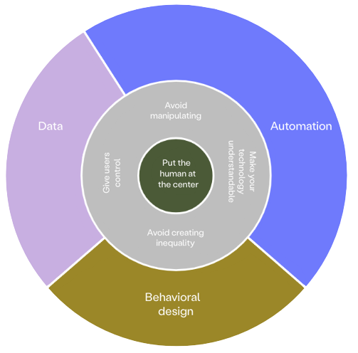

Ethics
In what ways are we thinking ethics into our designconcept?
When having talked about ethics at a lecture, we sat down in our project-group to talk about ethics in our designproject regarding our concept. We already had talked about some ethical concerns as we are working with children, but also found some new insight. Our most important ethical points/concerns are:
- We've chosen to work with a topic that in itself should improve the life of children - their relations and well-being especially in school (which effects them ofcourse all the time). In that way, the topic in itself has some ethical concerns as we are working with children and their feelings and actions.
- According to the above-mentioned, there are some problems with involving the target-group in our proces. Because of this, we chose to do the reasearch only as deskresearch (therefore no ethnographical research was made).
- We should also consider what effects our design would have, when it is implemented in the childrens life, as it will effect them in a way we can't possibly foresee. Though, we should try to make the design have only positive effects, and work towards shaping the design to do so.
- We should consider, how our design positions itself within the politics and laws (ex.: GDPR or likewise). There are often talk about so-called policy vacuums with online behavior, and it gets even more blurred or serius when children (anyone under 18) are involved.
- As part of a solution to some ethical problems that could arise when the design is implemented in classes, the teacher plays an important part. The teacher should be able to, through the platform, see signs that could be an indicator of bullying or any unwell feelings that the children may express in their use of the game and then, in relation to their overall knowlegde about the class dynamics and the individual - and then act upon these signals as occording to their pedagogical knowledge and authority.

There are probably a lot more ethical point-of-view to be found - I think there allways are, but the above-mentioned are what my groupmembers and I have discussed and thought was important to consider. There are also different tools that can be helpful to thinking ethics into design, as example I've included a screenshot of The Digital Ethic Compass by DDC (Danish Design Center). This can lead designers, companies and others in different directions and relevant reflections when dealing with designissues that relates to ethics.